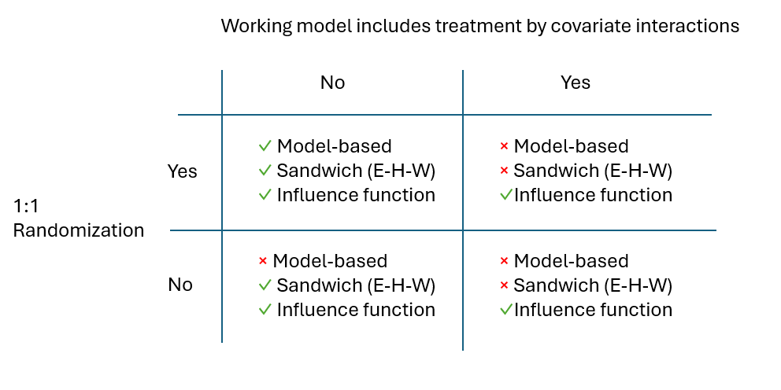

library(sandwich)
library(RobinCar)
sim_one_trial <- function(n){
a <- rbinom(n, 1, 0.5)
x <- rnorm(n)
y <- 1 + a + x + a * x + rnorm(n)
dat <- data.frame(y=y,a=factor(a),x=x)
fit <- glm(y ~ a * x, data = dat)
estimate <- c(t(c(0, 1, 0, mean(x))) %*% fit$coefficients)
model_based <- t(c(0, 1, 0, mean(x))) %*% vcov(fit) %*% c(0, 1, 0, mean(x))
sandwich <- t(c(0, 1, 0, mean(x))) %*% sandwich::vcovHC(fit) %*% c(0, 1, 0, mean(x))
ye <- RobinCar::robincar_linear(dat,
"a",
"y",
covariate_cols = "x",
adj_method = "ANHECOVA",
contrast_h = "diff")$contrast$varcov[1,1]
data.frame(estimate = estimate,
model_based = model_based,
sandwich = sandwich,
ye = ye)
}
results <- purrr::map_df(rep(200, 1e3), sim_one_trial)Covariate Adjustment for Linear Models: Understanding FDA Advice on Standard Errors
Please see the website https://carswg.github.io/ for information about the ASA Covariate Adjustment Working Group.
Prior reading
The blogpost How to get the most out of prognostic baseline variables in clinical trial by Courtney Schiffman, Michel Friesenhahn, and Christina Rabe is an excellent starting point for learning about modern methods of covariate adjustment and their practical implementation. The post focuses on linear models and covers most important aspects.
One area that might benefit from further explanation is variance estimation. The post suggests “using robust standard error estimators from the targeted maximum likelihood estimation (TMLE) literature”. Analytic formulas and R code are included in a straightforward way with references to the literature (Rosenblum and van der Laan, 2010). Nevertheless, it may be helpful to add some more intuitive explanation.
Goal for this blogpost
The FDA (2023) guidance document on covariate adjustment contains the following paragraph in the section on linear models:
Nominal standard errors are often the default method in most statistical software packages. Even if the model is incorrectly specified, they are acceptable in two arm trials with 1:1 randomization. However, in other settings, these standard errors can be inaccurate when the model is misspecified. Therefore, the Agency recommends that sponsors consider use of a robust standard error method such as the Huber-White “sandwich” standard error when the model does not include treatment by covariate interactions (Rosenblum and van der Laan 2009; Lin 2013). Other robust standard error methods proposed in the literature can also cover cases with interactions (Ye et al. 2022). An appropriate nonparametric bootstrap procedure can also be used (Efron and Tibshirani 1993).
There is a lot to unpick in this short paragraph. The situation can be summarized in the following two-by-two table of recommended variance estimation methods.

This is what we mean by these terms:
- Model-based – a.k.a. “nominal” standard errors. What is produced by default in
lm. Assumes a linear model with homoscedastic error terms. - Sandwich – a.k.a. Eicker-Huber-White standard errors.
- Influence function – variance estimation methods that are based on an estimator’s influence function . See, for example, Tsiatis et al., (2008), Moore and van der Laan (2009), Rosenblum and van der Laan (2010), Ye et al. (2022).
The goal of this blogpost is to give an intuitive understanding for why this two-by-two table looks the way it does.
Assumptions about sampling framework and estimands
The two-by-two table makes assumptions about the sampling framework and target estimand. Namely, it assumes the superpopulation sampling framework with potential outcomes. That is, \((Y_i(1), Y_i(0), A_i, X_i)\) for \(i=1,\ldots,N\) are i.i.d. random variables from joint distribution \(f\) where treatment assignment \(A_i\) is independent of the covariate and potential outcomes \(X_i, Y_i(0), Y_i(1)\). The target of inference is \(E_f(Y_i(1) - Y_i(0))\). Also we assume there is a sufficiently large sample size to rely on asymptotic results.
In this blogpost, we will restrict attention to simple random sampling. Many clinical trials employ permuted block randomization, which would contradict the assumption we have just made that \((Y_i(1), Y_i(0), A_i, X_i)\) are i.i.d. While it’s possible to accommodate alternative randomization schemes (see e.g., Ye et al., 2022; Wang et al., 2023), we’ll stick to the simpler theory around simple random sampling. For justification, see the section on “Accounting for Stratified Randomization” by Schiffman, Friesenhahn and Rabe
One potential alternative estimand would be the Conditional Average Treatment Effect at one specific covariate value, CATE(\(x\)), which is defined as \(E_f(Y_i(1) - Y_i(0) \mid X_i = x)\). A common approach to estimating CATE(\(x\)) is to assume a model of the form \[Y_i = \beta_0 + \beta_1A_i + \beta_2X_i + \epsilon_i,\] in which case CATE(\(x\)) is equal to \(\beta_1\) for all \(x\). So the task reduces to estimating \(\beta_1\). The Population Average Treatment Effect, \(E_f(Y_i(1) - Y_i(0))\), is also equal to \(\beta_1\) in this case.
If the assumed model is wrong, the interpretation of \(\hat{\beta}_1\) (the usual least squares estimator) as a consistent estimator of \(E_f(Y_i(1) - Y_i(0) \mid X_i = x)\) is wrong – there is no reason in general for CATE(\(x\)) to be constant across different values of \(x\). On the other hand, the interpretation of \(\hat{\beta}_1\) as a consistent estimator of \(E_f(Y_i(1) - Y_i(0))\) remains correct (Van Lancker et al., 2024). This can be seen from the fact that \(\hat{\beta}_1 \approx \bar{Y}_1 - \bar{Y}_0 - \hat{\beta}_2(\bar{X}_1 - \bar{X}_0)\) where \(\bar{Y}_j\) and \(\bar{X}_j\) are the sample means of \(Y\) and \(X\), respectively, on treatment \(j\) (see Appendix of Tsiatis et al., 2008), and \(\bar{X}_1 - \bar{X}_0\) being asymptotically zero.
Sometimes, we may assume an outcome model that includes treatment-covariate interactions, \[Y_i = \beta_0 + \beta_1A_i + \beta_2X_i + \beta_3A_iX_i + \epsilon_i.\] In this case, if the true underlying model really does contain treatment-covariate interactions, then the estimand CATE(\(x\)) is not constant in \(x\), which makes it somewhat unsuitable as an estimand for primary analysis in an RCT. One could, however, with a few extra steps, use this model to estimate \(E_f(Y_i(1) - Y_i(0))\). One option is g-computation (or standardization), whereby we estimate \(E_f(Y_i(1))\) by the average of the model based predictions when setting the treatment assignment to \(1\),
\[\hat{\mu}(1) = \frac{1}{N} \sum_{i = 1}^N \hat{\beta}_0 + \hat{\beta}_1 + \hat{\beta}_2X_i + \hat{\beta}_3X_i,\] and we estimate \(E_f(Y_i(0))\) similarly by setting the treatment assignment to \(0\), \[\hat{\mu}(0) = \frac{1}{N} \sum_{i = 1}^N \hat{\beta}_0 + \hat{\beta}_2X_i.\]
A possible estimator of \(E_f(Y_i(1) - Y_i(0))\) is therefore,
\[\hat{\mu}(1) - \hat{\mu}(0) = \hat{\beta}_1 + \bar{X}\hat{\beta}_3.\]
Including treatment-covariate interaction terms in the outcome model is somewhat discouraged in an EMA guidance document from 2015 with the following statement.
If there is no reason to suspect an interaction between treatment and a covariate then the primary analysis should only include the main effects for treatment and covariate. Conversely, if a substantial treatment by covariate interaction is suspected at the design stage, then stratified randomisation and/or subgroup analyses should be pre-planned accordingly.
The blogpost How to get the most out of prognostic baseline variables in clinical trial also recommends not to include such terms, but for a different reason. The experience of the authors is that adding such terms to a model does not typically lead to a meaningful increase in efficiency, and we need to be mindful of our “model budget”, that is, the allowable number of terms in a working model relative to the sample size before performance degrades.
For a linear model with 1:1 randomization, under the sampling framework outlined above, there is no efficiency gain to be had from modelling treatment-covariate interactions even when these interactions are extremely large (Tsiatis, 2008). This possibly surprising fact deserves a separate blogpost.
Nevertheless, the FDA guidance document is open to including such treatment-covariate interaction terms:
The linear model may include treatment by covariate interaction terms. However, when using this approach, the primary analysis can still be based on an estimate from the model of the average treatment effect (Tsiatis et al. 2008; Ye et al. 2021).
Understanding variance estimation recommendations in the 2x2 table.
Treatment by covariate interactions
To understand the right hand column of the two-by-two table, where neither the model-based nor the sandwich estimator would be recommended, we can stay within the framework of a correctly specified working model, \[Y_i = \beta_0 + \beta_1A_i + \beta_2X_i + \beta_3A_iX_i + \epsilon_i,\]
where \(\epsilon_i \sim N(0, \sigma^2)\). At the moment, we are assuming that this model is correctly specified in the sense of having the correct mean model \(E(Y_i\mid A_i, X_i) = \beta_0 + \beta_1A_i + \beta_2X_i + \beta_3A_iX_i\), in the sense of having the correct variance model \(\mathrm{var}(Y_i\mid A_i, X_i) = \sigma^2\), and also in the sense of having the correct distribution. These assumptions will be relaxed later in the post.
The first important point is that the parameter \(\beta_1\) does not in general correspond to \(E_f(Y_i(1) - Y_i(0))\), so we cannot simply report the maximum likelihood estimate \(\hat{\beta}_1\). To use the working model to estimate \(E_f(Y_i(1) - Y_i(0))\), one option is g-computation (or standardization). As described above, this produces an estimator \(\hat{\beta}_1 + \bar{X}\hat{\beta}_3\).
The question remains how do we estimate \(\mathrm{var}(\hat{\beta}_1 + \bar{X}\hat{\beta}_3)\)?
Law of total variance
The law of total variance (with a correctly specified mean model) says that
\[\begin{equation} \begin{split} \mathrm{var}(\hat{\beta}_1 + \bar{X}\hat{\beta}_3) &= E \left\lbrace \mathrm{var}(\hat{\beta}_1 + \bar{X}\hat{\beta}_3 \mid \underline{A}, \underline{X})\right\rbrace + \mathrm{var}\left\lbrace E(\hat{\beta}_1 + \bar{X}\hat{\beta}_3\mid \underline{A}, \underline{X}) \right\rbrace\\ &= E \left\lbrace \mathrm{var}(\hat{\beta}_1 + \bar{X}\hat{\beta}_3 \mid \underline{A}, \underline{X})\right\rbrace + \beta_3^2\mathrm{var}(\bar{X}) \end{split} \end{equation}\]
Given our assumptions about the correctness of the working model, the first term, \(E\left\lbrace \mathrm{var}(\hat{\beta}_1 + \bar{X}\hat{\beta}_3 \mid \underline{A}, \underline{X})\right\rbrace\), can be consistently estimated via
\[(0 ~~~1 ~~~0 ~~~\bar{x}) \widehat{\mathrm{var}}(\hat{\beta} \mid \underline{A}= \underline{a}, \underline{X}= \underline{x}) \left( \begin{array}{c} 0\\ 1 \\0 \\ \bar{x} \end{array} \right),\qquad\qquad(\mathrm{1})\] where \(\widehat{\mathrm{var}}(\hat{\beta} \mid \underline{A}= \underline{a}, \underline{X}= \underline{x})\) is either the standard model-based variance estimator for the maximum likelihood estimator of \(\beta\) (as would typically be produced by default in standard software) in which case (1) represents the “model based” variance estimator in the two-by-two table above, or \(\widehat{\mathrm{var}}(\hat{\beta} \mid \underline{A}= \underline{a}, \underline{X}= \underline{x})\) is a sandwich estimator, in which case (1) represents the “sandwich” variance estimator in the two-by-two table. In either case, (1) ignores the second term in the law of total variance, \(\beta_3^2\mathrm{var}(\bar{X})\). This is the reason why it is not recommended. Alternative variance estimators based on influence functions, e.g., Tstiatis et al. (2008), Rosenblum and van der Laan (2010), Ye et al. (2022), do take account of this second term.
We did not need to talk about misspecified working models in order to demonstrate why the “model-based” and “sandwich” variance estimators are not recommended when the working model contains treatment by covariate interactions. But it is worth saying at this point that the influence function methods remain asymptotically valid when the mean and/or variance model is misspecified.
Illustrative example
As a demonstration, we would need to simulate multiple (1000, say) trials from the working model above where there is a strong treatment by covariate interaction. For each simulated trial, we would record the estimate of the treatment effect, as well as the estimated variance of the treatment effect estimator according to the three different methods.
We’ll use the influence function approach as implemented in Ye et al. (2022) using the R package {robincar}, noting this is the same as previous versions (e.g., Tstiatis et al. (2008), Rosenblum and van der Laan (2010)).
Empirically, the variance of the point estimates is…
var(results$estimate)[1] 0.02753465We can see that the Ye et al.(2022) method is reasonably consistent with this…
mean(results$ye)[1] 0.02499644…while this is not the case for the other two methods…
mean(results$model_based)[1] 0.02020404mean(results$sandwich)[1] 0.02064523Homogeneous working model
We can now move on to the first column of the two-by-two table. In this case, suppose the working model is \[Y_i = \beta_0 + \beta_1A_i + \beta_2X_i + \epsilon_i\] with \(N(0, \sigma^2)\).
If the mean model is correctly specified then it is clear that \(\beta_1 = E_f(Y_i(1) - Y_i(0))\). [Although it can also be shown via a lot of algebra (see e.g. the Appendix of Tsiatis et al. (2008)) that the maximum likelihood estimator \(\hat{\beta}_1\) is consistent for \(E_f(Y_i(1) - Y_i(0))\) even when the model is completely misspecified].
The question now is how to estimate \(\mathrm{var}(\hat{\beta}_1)\)?
In contrast to the treatment-covariate interaction case, the law of total variance (with an assumption of a correctly specified mean model) now tells us that we can focus on estimating the conditional variance, \[ \begin{equation} \begin{split} \mathrm{var}(\hat{\beta}_1) &= E \left\lbrace \mathrm{var}(\hat{\beta}_1 \mid \underline{A}, \underline{X})\right\rbrace + \mathrm{var}\left\lbrace E(\hat{\beta}_1\mid \underline{A}, \underline{X}) \right\rbrace\\ &= E \left\lbrace \mathrm{var}(\hat{\beta}_1 \mid \underline{A}, \underline{X})\right\rbrace + 0. \end{split} \end{equation} \]
There are two options: 1) a completely model-based approach, \(\widehat{\mathrm{var}}_M(\hat{\beta}_1 \mid \underline{A}= \underline{a}, \underline{X}= \underline{x})\), as would typically be produced by default in standard software. Or, 2) the well known Huber-White (White, 1980) “sandwich” estimator, \(\widehat{\mathrm{var}}_S(\hat{\beta}_1 \mid \underline{A}= \underline{a}, \underline{X}= \underline{x})\).
If all the working model assumptions are satisfied, then both (1) and (2) are consistent estimators of \(\mathrm{var}(\hat{\beta}_1)\). We could put a provisional tick mark next to all methods in the left-hand column of the two-by-two table. To replace some of those ticks with crosses, we can consider what happens when the variance model in the working model is not correctly specified.
Back to an unadjusted analysis
Actually, we can make things even simpler for ourselves by considering an unadjusted analysis with working model \[Y_i = \beta_0 + \beta_1A_i + \epsilon_i, \qquad \epsilon_i \sim N(0, \sigma^2)\] but where the true model is \[Y_i = \beta_0 + \beta_1A_i + \epsilon_i, \qquad \epsilon_i \sim \begin{array}{c} N(0, \sigma_0^2), ~~A_i = 0 \\N(0, \sigma_1^2), ~~A_i = 1 \end{array}.\] When using the misspecified working model, the maximum likelihood estimator for \(\mathrm{var}(\hat{\beta}_1 \mid \underline{A} = \underline{a})\) is
\[v^{\mathrm{miss}} =\frac{\hat{\sigma}^2}{n_0} + \frac{\hat{\sigma}^2}{n_1}.\]
Substituting in
\[ \hat{\sigma}^2 = \frac{n_0\hat{\sigma}_0^2 + n_1\hat{\sigma}_1^2}{n_0 + n_1}\] and rearranging yields
\[v^{\mathrm{miss}} = \frac{\hat{\sigma}_0^2}{n_1} + \frac{\hat{\sigma}_1^2}{n_0},\] whereas when using the correct true model, the MLE based variance estimator is \[v^{\mathrm{true}} =\frac{\hat{\sigma}_0^2}{n_0} + \frac{\hat{\sigma}_1^2}{n_1}.\] Obviously the two are equivalent under equal allocation, but this is not the case for unequal allocation. We can plot what happens to \(v^{\mathrm{miss}} / v^{\mathrm{true}}\) as a function of \(\sigma_0 / \sigma_1\) for various choices of allocation ratio (Treatment 1: Treatment 0), e.g, 2:1, 1:1 and 1:2 randomization…
sigma_1 <- 1
n_1 <- 100
sigma_0 <- seq(0.33, 2, length = 100)
v_ratio <- function(n_0){(sigma_0^2/n_1+sigma_1^2/n_0)/(sigma_1^2/n_1+sigma_0^2/n_0)}
plot(sigma_0, v_ratio(n_0 = 50), type = "l", xlab = "sigma_0 / sigma_1", ylab = "ratio of variance estimates")
points(sigma_0, v_ratio(n_0 = 100), type = "l", col = 2)
points(sigma_0, v_ratio(n_0 = 200), type = "l", col = 3)
legend(1,1.6,c("2:1", "1:1", "1:2"), lty = c(1,1,1), col = 1:3)
This shows, for example, that if the true variance on treatment 0 is larger than the true variance on treatment 1, and there are more patients on treatment 1, then the estimated model-based variance of \(\hat{\beta}_1\) based on the misspecified working model will underestimate the true variance of \(\hat{\beta}_1\).
This is the reason why we need to put a cross next to the model-based approach for non-1:1 randomization when using a homogeneous working model. But we can keep a provisional tick when using 1:1 randomization.
What about the sandwich estimator?
For an unadjusted analysis, the sandwich estimator for \(\mathrm{var}(\hat{\beta}_1)\) based on the misspecified working model is essentially equivalent to \(v^{\mathrm{true}}\) above. So for this particular example, the sandwich estimator would still work fine. We can keep a provisional tick mark next to the sandwich estimator for both 1:1 and non-1:1 randomization.
Summary and comment on misspecified mean models
In this blogpost, we have attempted to show why the two-by-two table of recommended variance estimators looks the way it does.
We have been able to demonstrate clearly the reasons for all of the crosses in the two-by-two table. The ticks, however, are still provisional. We have only considered correctly-specifed models and one specific example where the only source of misspecification is an equal variance assumption.
It turns out that the tick marks can stay even when the working mean model is misspecified (subject to some regularity conditions). Proving this level of robustness has been the subject of much impressive work (see the reference list below and a nice summary here) and is beyond the scope of this blogpost.
P.s. more alternative estimands
The above discussion takes for granted that the estimand is the unconditional expectation of the difference in sample means
\(E_f(Y_i(1) - Y_i(0)) = E_{f^N}(\bar{Y}_1 - \bar{Y}_0)\),
where \(f^N\) is the joint distribution of all \(N\) individuals’ data.
Another potential alternative estimand is the conditional expectation for the difference in sample means given the vector of baseline covariates,
\(\frac{1}{N}\sum_{i=1}^NE_f(Y_i(1) - Y_i(0) \mid X_i = x_i) = E_{f^N}(\bar{Y}_1 - \bar{Y}_0 \mid \underline{X} = \underline{x})\).
This alternative estimand is discussed in the context of binary outcomes by Magirr et al. (2024). In this case, the recommendations for variance estimation would need to be changed, to reflect that the vector of baseline covariates is considered fixed.
Yet another alternative estimand is the sample average treatment effect,
\[\frac{1}{N}\sum_{i=1}^N Y_i(1) - Y_i(0),\]
where randomization inference methods could be applied (Guo and Basse, 2023).
References
Efron, B and RJ Tibshirani, 1993, An Introduction to the Bootstrap, Boca Raton (FL): Chapman & Hall.
Rosenblum, M and MJ van der Laan, 2009, Using Regression Models to Analyze Randomized Trials: Asymptotically Valid Hypothesis Tests Despite Incorrectly Specified Models, Biometrics, 65(3):937-945.
Lin W, 2013, Agnostic Notes on Regression Adjustments to Experimental Data: Reexamining Freedman’s Critique, Annals of Applied Statistics, 7(1):295-318.
Ye, T, J Shao, Y Yi, and Q Zhao, 2022, Toward better practice Of Covariate Adjustment In Analyzing Randomized Clinical Trials, Journal of the American Statistical Association, doi: 10.1080/01621459.2022.2049278.
Tsiatis, Anastasios A., et al. “Covariate adjustment for two-sample treatment comparisons in randomized clinical trials: a principled yet flexible approach.” Statistics in medicine 27.23 (2008): 4658-4677.
White, Halbert. “A heteroskedasticity-consistent covariance matrix estimator and a direct test for heteroskedasticity.” Econometrica: journal of the Econometric Society (1980): 817-838.
Van Lancker, Kelly, Frank Bretz, and Oliver Dukes. “Covariate adjustment in randomized controlled trials: General concepts and practical considerations.” Clinical Trials (2024): 17407745241251568.
Guo, Kevin, and Guillaume Basse. “The generalized oaxaca-blinder estimator.” Journal of the American Statistical Association 118.541 (2023): 524-536.
Wang, B., Susukida, R., Mojtabai, R., Amin-Esmaeili, M., & Rosenblum, M. (2023). Model-robust inference for clinical trials that improve precision by stratified randomization and covariate adjustment. Journal of the American Statistical Association, 118(542), 1152-1163